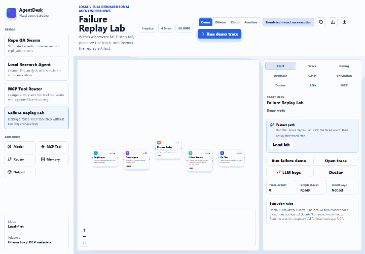
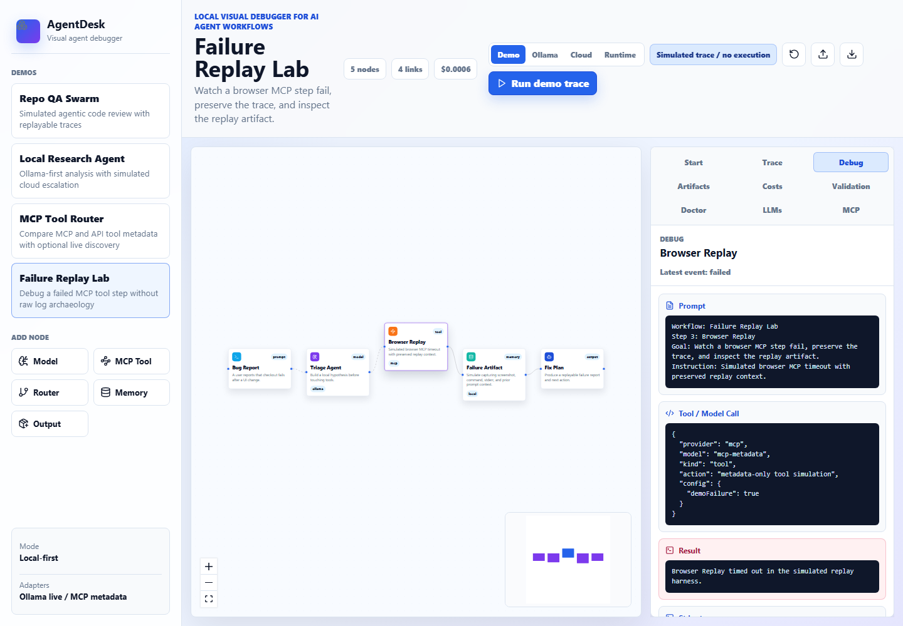
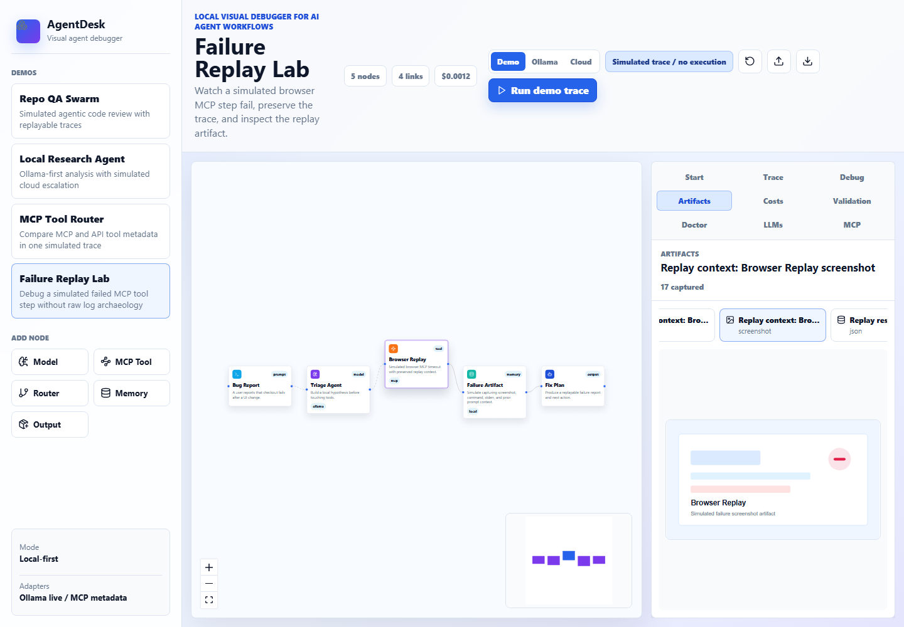
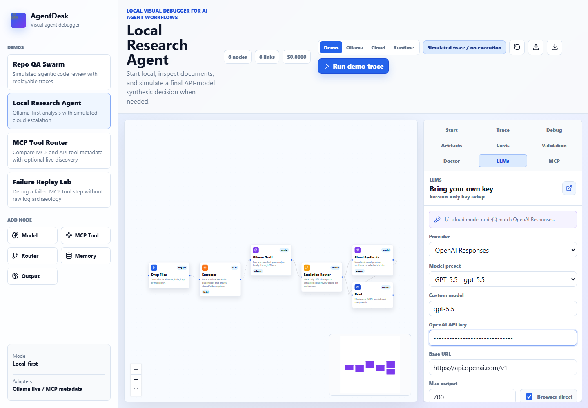
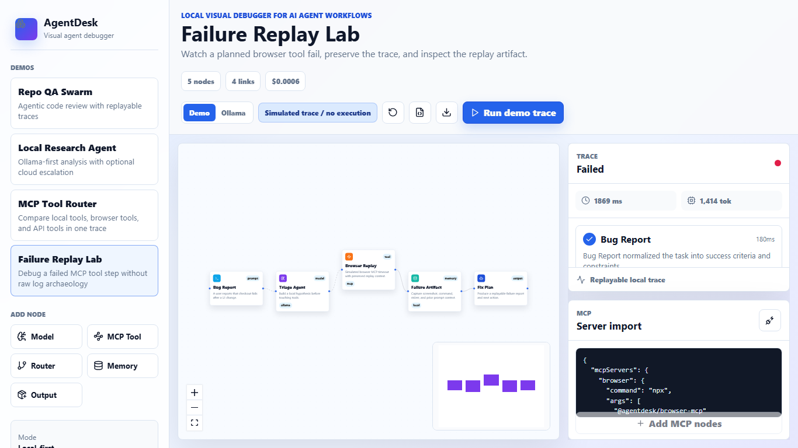
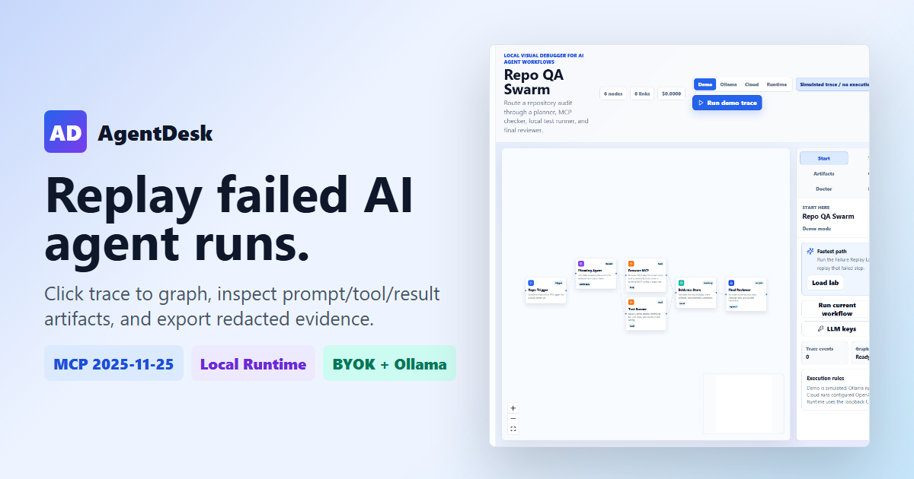

Project launch details
AgentDesk turns failed AI agent runs into clickable, replayable evidence bundles.
The launch demo starts with a browser/MCP checkout failure, highlights the exact graph node, shows the prompt/tool/result/stderr/screenshot evidence, replays only the failed step, then exports a redacted session for an issue, PR, or handoff.
Public URLs
Live app
Repository
Launch page
Package name
@papaplus/agentdesk on npm with the agentdesk executable.
First 30 seconds
- Open AgentDesk; it lands on Failure Replay Lab.
- Click Run failure demo.
- Click the failed Browser Replay event to highlight the graph node.
- Show Debug, Artifacts, and Costs for the failed step.
- Replay the failed step without erasing the original failure.
- Export or import the replay session.
Why it is different
Debugging before orchestration
AgentDesk focuses on replay, evidence, artifacts, validation, and explanation before developers wire workflows into production tools.
Honest execution modes
Ollama model nodes can run locally, OpenAI/Anthropic model nodes can run with session-only BYOK keys, and MCP/local tool steps run through the loopback CLI Runtime mode.
Screenshots






Launch copy
Show HN: AgentDesk, a local visual debugger for AI agent workflows I built AgentDesk because most agent workflow tools make the graph easy to draw but the failed run hard to explain. AgentDesk gives you a local graph canvas, click-linked traces, failed-step replay, prompt/tool/result inspection, artifact viewing, graph validation, MCP 2025-11-25 config import with redaction, local Ollama model-node execution, BYOK OpenAI/Anthropic model nodes, loopback Runtime mode for local tools/MCP discovery and tool calls, trace bundle manifests, LangGraph/CrewAI starter exports, cost summaries, and portable replay-session exports. Browser-direct cloud calls are BYOK/session-only, may be blocked by provider CORS or organization policy, and production apps should use a backend proxy. BYOK prompts and responses become trace evidence; API keys are not exported.
Known limits to say out loud
- Static hosted demos cannot spawn local processes; use the packaged CLI for Runtime mode.
- Shell commands stay blocked unless explicitly enabled before CLI launch.
- Browser-direct OpenAI/Anthropic calls can be blocked by provider CORS, browser policy, or organization settings.
- Production apps should proxy cloud model calls through a backend secret boundary.
- BYOK prompts and responses become trace/debug/artifact evidence, though API keys are excluded from exports.